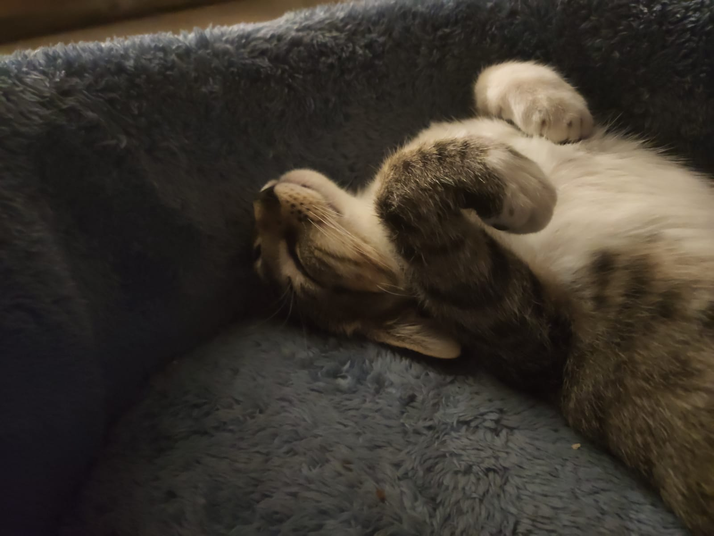
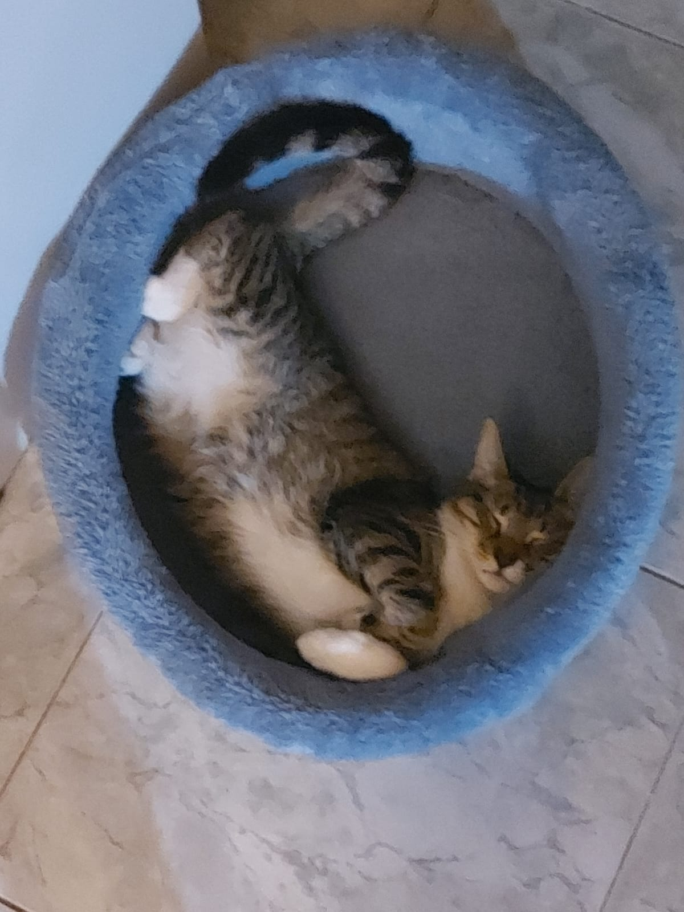

La camita redonda


Esta camita redonda de peluche celeste es uno de sus lugares de confianza para dormir profundo. Le encanta acomodarse hecha un ovillo, tapando la cara con las patas, o directamente dormir panza arriba como si nada pudiera pasarle. Cuando está acá, es casi imposible despertarla.